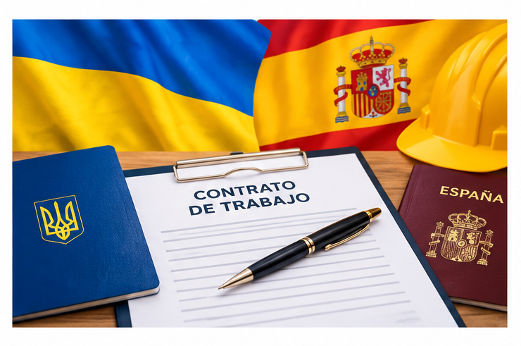

для самостійного подання до державних органів Іспанії
Перш ніж збирати документи, важливо визначитися, який саме тип резиденції вам підходить — вимоги, форми і терміни для кожного варіанту різні. Коротко про чотири напрямки:
Оберіть свій варіант нижче, щоб перейти до докладної покрокової інструкції.
Перехід через autónomo (cuenta propia), ст. 191

Перехід через роботодавця (cuenta ajena), ст. 191
5 підвидів: трудова, соціальна, освітня, сімейна, друга можливість
Спрощена процедура для неповнолітніх, ст. 160
Бланки форм і зразки, які знадобляться для подання
EX-26 по полях, меморія, оплата й реєстрація таси, índice — за реальною подачею
Кожен екран і кожне поле зі скріншотами
Усі офіційні сайти та сервіси, згадані в інструкціях